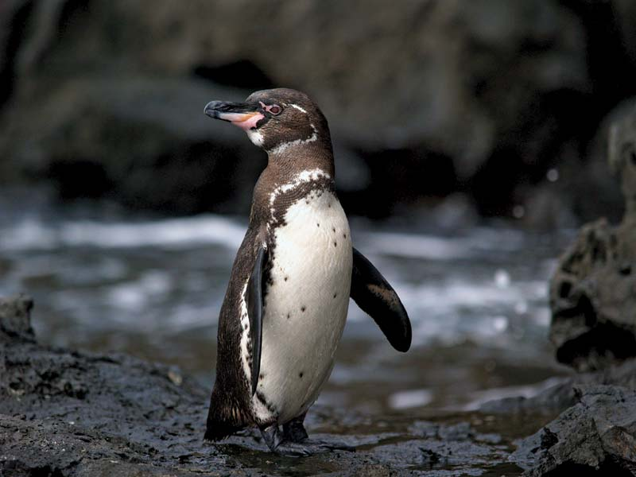

Spheniscus mendiculus
Galapagos Penguins are the most northerly penguins, they are the second smallest species in the world, the smallest probably goes to the little or Fairy Penguin. They are, as their name suggests endemic to the Galapagos Islands.